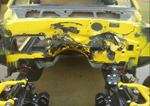

Brian's 1968 Camaro
Brian brought us a car with its own unique story; he built and painted it himself, including mini-tubs, at the cost of many, many hours of labor. So why did the car wind up at AMD Installation Center? One rain slicked morning on a highway in Virginia the car was tapped from behind and sent spinning into the barrier wires in the center median. With all four corners of the car damaged, Brian just couldn’t bear the thought of doing it all over again, plus he already had other projects in the works begging for his time. We were happy to supply our time and expertise in helping Brian iron out the creases in the pretty 1968 Camaro he had built.
Ed's 1969 Camaro
Ed and his family had their 1969 Camaro in two different shops over the course of two and a half years and got back a car that was actually worse than when it started. The methods used on the car are often referred to as ‘patch and plaster’ or ‘cave and pave’. Most of the repairs done at the other shops were already failing as you will clearly see in some of the photos. It was a long drive from New York for Ed and his family tobring the car to us,but it was worth it. While we were working on the car, Ed was laid up from back surgery and we had the opportunity to send him some cheer via email photos of the progress on his families Camaro. Ed and his family now have a solid body to build their dream car around.
Gordon's 1969 Camaro
Gordon brought us up a very rusty 1969 Camaro from South Carolina for extensive panel replacement and convinced us to do a ‘tub job’ on it. At the time Gordon’s car came up we were not doing any modifications, only OEM style panel replacements. Thanks to Gordon, several customers have taken advantage of our new ‘mini-tub’ program. In addition to Detroit Speed & Engineering tubs, we also added a QUADRA link rear suspension, DSE sub-frame connecters and a T-56 cross member. To top it all off, Gordon had DSE send up their new HYDROFORMED sub-frame and added 18 and 20 inch Budnik wheels. This will be one super slick car when it is finished and we are looking forward to putting some finished photos on our web site.
Jimmy's 1969 Camaro SS

Jimmy brought us in another car that was completely redone and on the road. So what was the problem? With just a few miles on his beautiful 1969 SS, Jimmy tipped into the gas pedal on the potent power plant only to have the flywheel shatter into pieces that tore up the transmission,the rear of the engine, and the firewall. The good news is that Jimmy andhis wife walked away without a scratch; the bad news, a lot of hard work down the drain. Jimmy took the car apart and brought it up to The Installation Center for a complete rebuild of the firewall area. As always we were happy to help out and sent the car home with a new ‘smooth’ firewall as well as cowl shoulders, upper cowl and dash top.
Josh and Bronwyn's 1968 Camaro
Josh and his wife Bronwyn have one of those classic cars stories that could become legend. They turned over a complete 1968 Camaro to a local shop to be renovated, body and paint etc. When the work commenced Josh wasn’t happy with what he saw and the shop promised to put a ‘better man’ on the job. After much frustration over the course of 11 months Josh and Bronwyn decided to pull their project out of the shop. When the car showed up at their home it was only pieces of the car and when they went down to the shop for the rest of the car the shop nolonger existed. The building had literally been removed and what was left of their car was scattered around the property and the concrete slab. Josh and Bronwyn rented a truck and went back to pick up what parts they could, the motor; however, showed up later on their driveway one night. Although we were dismayed at how Josh and Bronwyn were treated by the other shop, we were glad to have the opportunity to prove that you can get excellent work at a reasonable price just as promised.
|
|